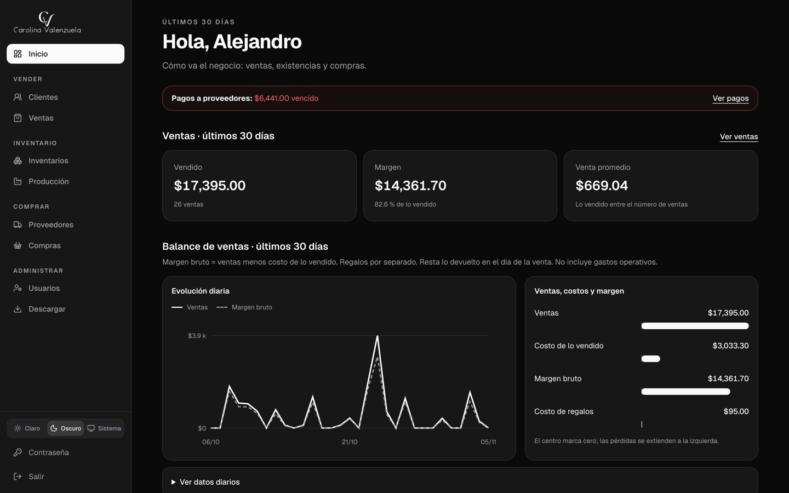
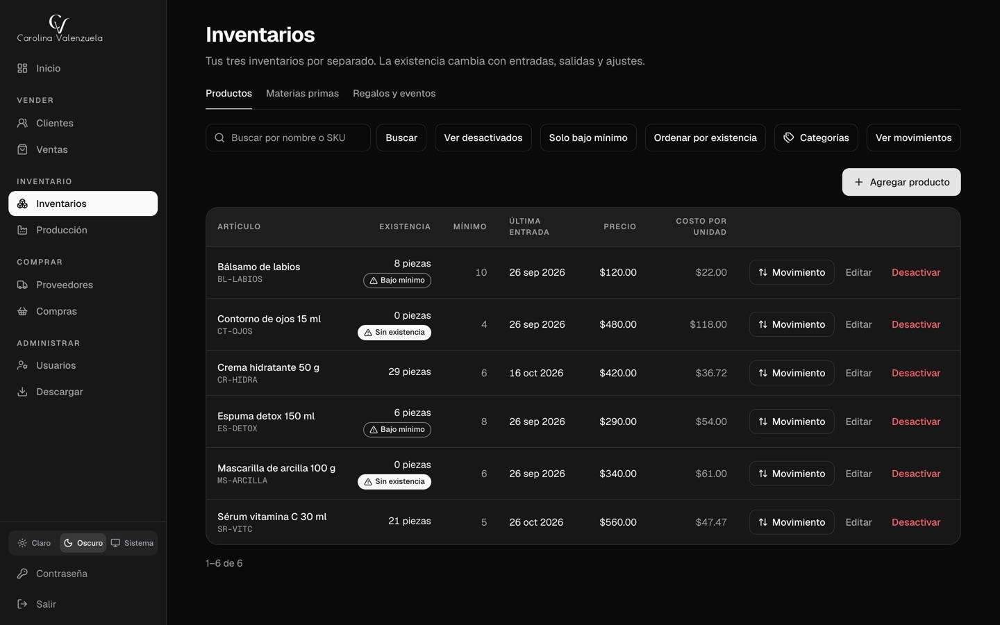

Carolina Valenzuela
Cisnexa Software · 2026Una aplicación para reunir la operación de una marca de cuidado de la piel en Puebla.
La necesidad
Llevar el control de inventarios, clientes, proveedores, compras, ventas, producción y eventos.
Mi trabajo
Levanté los requerimientos y preparé una cotización y un plan por etapas, con pruebas de aceptación para cada entrega. Desarrollé la aplicación e incluí hosting y soporte mensual.

Ver el control de inventario

La misma aplicación, con datos de prueba: existencias, avisos de mínimo, última entrada y costo por unidad.
Lo que incluye
- Tres inventarios separados: productos terminados, materias primas y artículos para regalos o eventos, con alerta cuando algo llega a su mínimo.
- Compras, órdenes de compra y pagos a proveedores.
- Ventas, con registro de por dónde llegó cada clienta.
- Producción: lo que se fabrica descuenta sus materias primas y el costo de cada pieza se calcula solo, incluida la merma.
- Tres usuarios con permisos distintos; quien no debe ver costos no los ve.
- Exportación a CSV y PDF.
Cómo cuido la información
- Cada existencia sale de un historial de movimientos, así que siempre se puede explicar de dónde viene un número.
- Lo que ya se registró no se edita en silencio: se cancela o se corrige dejando rastro.
- Respaldo automático cada lunes. Además de copiar la base, se restaura en otra y se comprueba que los inventarios cuadren.
- Más de 80 archivos de pruebas automáticas sobre inventario, costos y permisos.
Detalles de implementación
Next.js, React y TypeScript con PostgreSQL (Neon) y Prisma, desplegado en Vercel. Autenticación con Auth.js y permisos por módulo. Las cantidades y los importes se calculan en decimal exacto, nunca con punto flotante. Se entregó por etapas, cada una con sus pruebas de aceptación: primero inventarios, clientes, proveedores y compras; después ventas y producción.